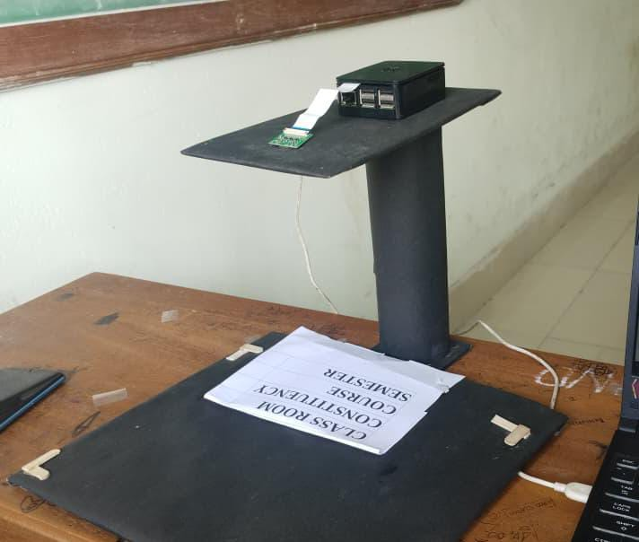
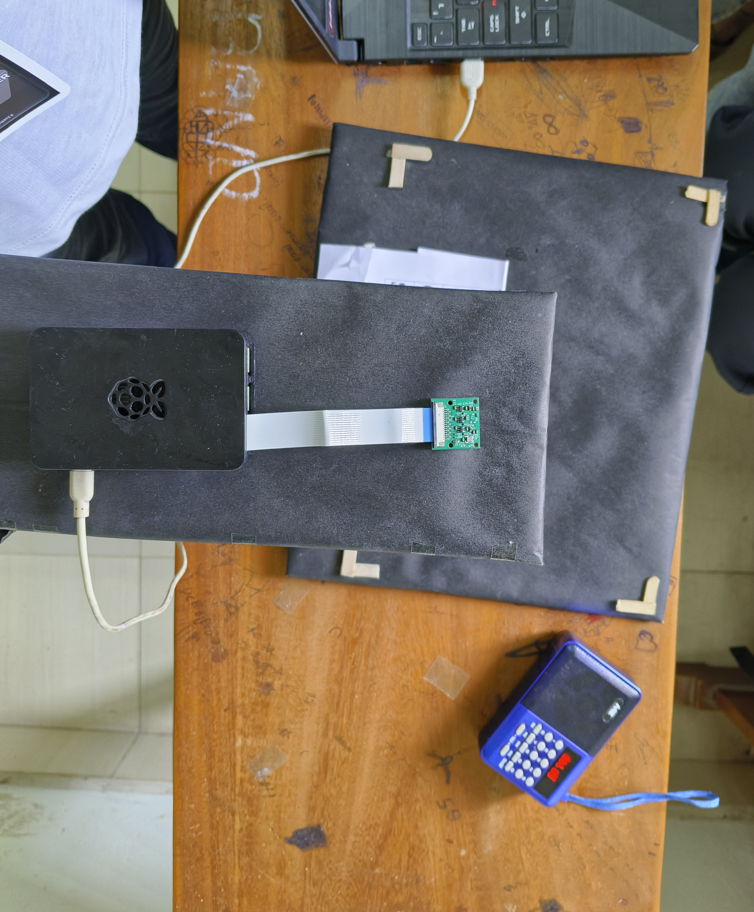

Assistive Technology
Smart Reader for Blind

Overview
This project is a user-friendly device designed to assist visually impaired individuals in reading printed text. It addresses a critical need by offering an alternative to Braille readers and similar assistive technologies. Unlike traditional solutions, it eliminates the complexity of learning Braille while ensuring accessibility for a larger audience.
It can read book pages, documents, making it a useful tool for both education and daily life.

Technology Stack
- Raspberry Pi: The core processing unit.
- Camera Module: Captures high-resolution images of printed text.
- OpenCV: Processes images for grayscale conversion and enhancement.
- Tesseract OCR: Recognizes and extracts text characters from the processed images.
- eSpeak: Converts the recognized text into audible speech output via a speaker.